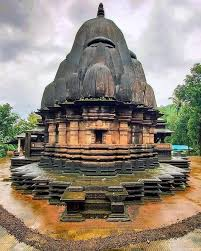
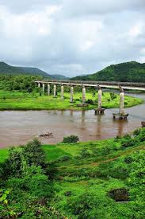
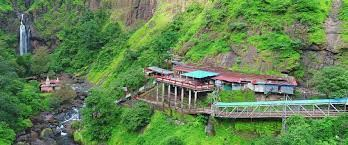
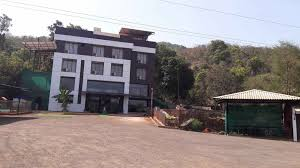
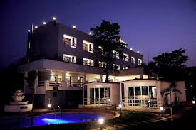

Sangmeshwar is a scenic town in Ratnagiri district where multiple rivers meet, surrounded by lush hills and rich historical significance. It is known for temples, waterfalls, and its connection to Maratha history.

An ancient Lord Shiva temple built in traditional Hemadpanthi architectural style.

A beautiful confluence of rivers creating a peaceful natural setting.

A cave temple dedicated to Lord Shiva located near a spectacular waterfall.

rating: 4.3 | Cozy stay surrounded by greenery.

rating:⭐ 4.1 | Relaxing rooms with scenic views.